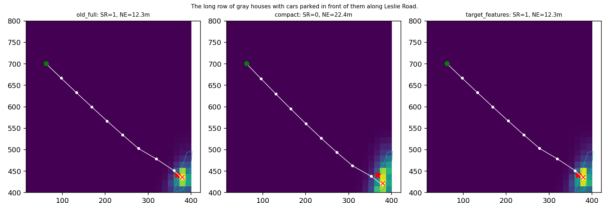
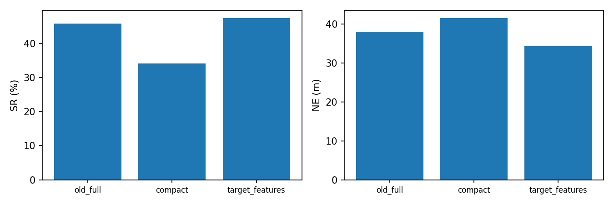
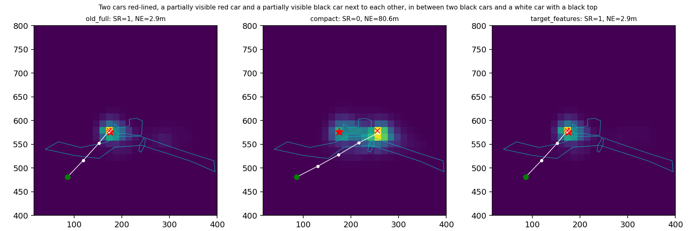
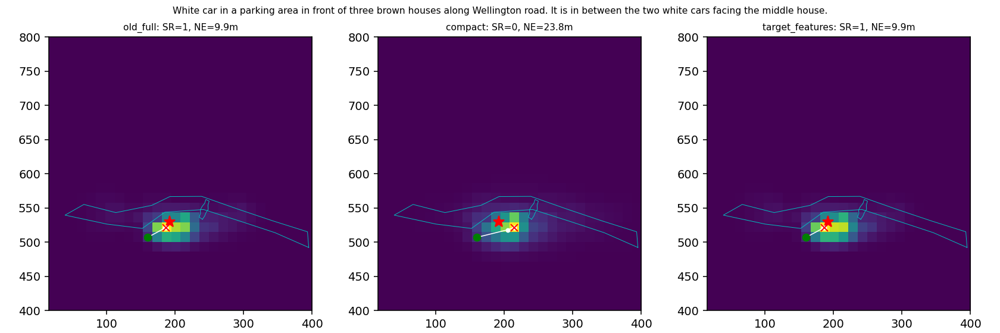
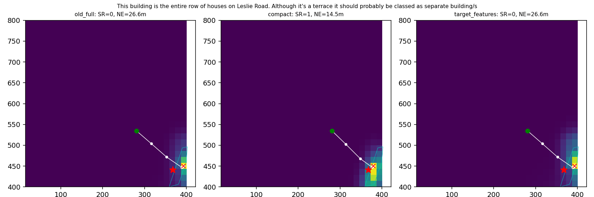
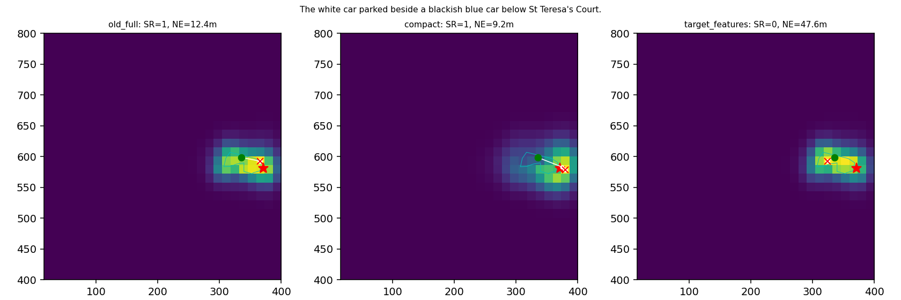
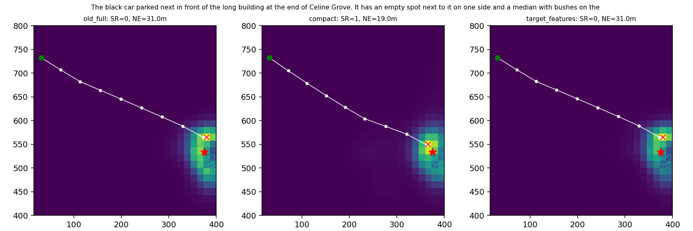

Episode index 1
The long row of gray houses with cars parked in front of them along Leslie Road.

任务数量及范围见中文报告；RGB关闭、目标描述完整保留。白线为真实闭环轨迹，青色为公开Polygon，红星为事后评价GT。
中文报告
The long row of gray houses with cars parked in front of them along Leslie Road.

Two cars red-lined, a partially visible red car and a partially visible black car next to each other, in between two black cars and a white car with a black top, in the parking lot that's on the side of the St Teresa of the Child Jesus Catholic church building off Wellington Road

White car in a parking area in front of three brown houses along Wellington road. It is in between the two white cars facing the middle house.

This building is the entire row of houses on Leslie Road. Although it's a terrace it should probably be classed as separate building/s

The white car parked beside a blackish blue car below St Teresa's Court.

The black car parked next in front of the long building at the end of Celine Grove. It has an empty spot next to it on one side and a median with bushes on the other.
